Publication figures of optical experiments, in your browser.
RNBeamX traces real beams through real optics, and has the device sketches that papers also need. Everything stays vector and editable, so you can export straight to PDF, SVG or PNG at journal size.
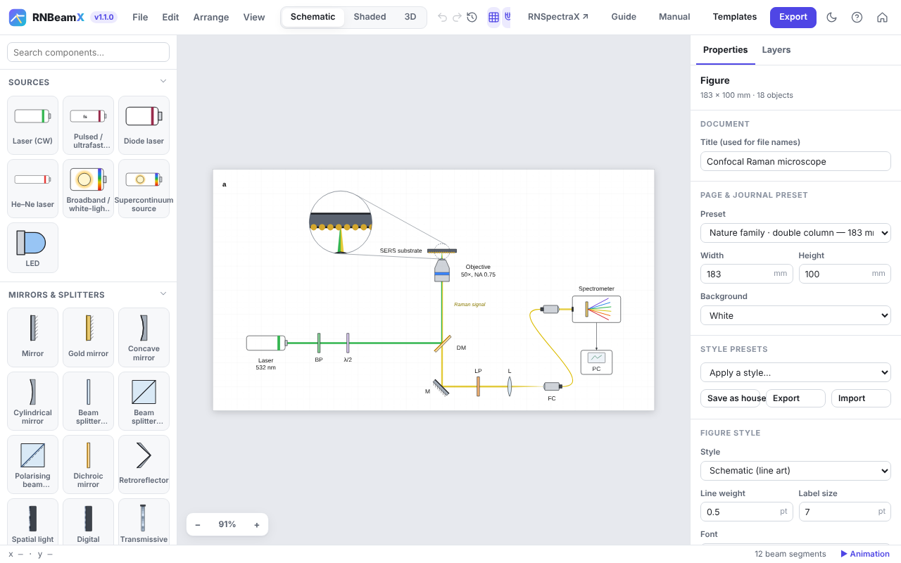
Quick start
A complete figure in five steps. Nothing is ever lost: every action can be undone with Ctrl+Z.
- Pick a pageChoose a journal preset under Page & journal preset, e.g. Nature double column (183 mm).
- Add a sourceClick Laser in the library. Its beam is traced at once.
- Drop optics on the beamDrag a mirror, lens or splitter onto the beam. It snaps on and turns to face the beam.
- Tune in the inspectorWavelength, focal length, reflectance, wave-plate angle… the beams update live.
- ExportPress Export, choose the width and format, and get a file ready to submit.
Building beam paths
Beams are traced, not drawn. Change any part and the light follows.
Snapping
Optics dropped on a beam snap onto it and turn to face it. Hold Alt to place freely. R rotates by 15°, F flips, O re-orients to the beam.
Physics
- Reflection, splitting, paraxial lenses
- Sellmeier dispersion in prisms, the grating equation
- Jones-calculus polarisation (λ/2, λ/4, PBS)
- Gaussian beams, Fresnel ghosts, interference
Off the table
Fold mirrors and periscopes send beams up or down, to an upright objective or another level. Shown correctly in 2D and 3D.
Readouts
Click a detector to see the power, wavelengths, polarisation, beam size and interference phase reaching it.
Building blocks: assemble a device part by part
The Nanostructures & films group holds separate parts that stack onto each other: substrate or film slabs, grating ridges, conformal coatings, nano-object arrays and 2D-material sheets, plus a layer key.
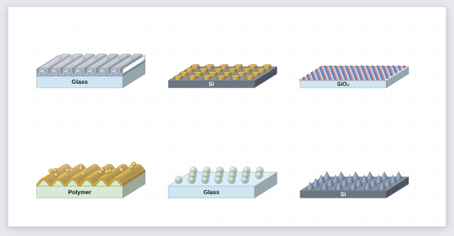
Stacking
Select a block and click another block in the library: it lands on top and takes the same width, depth and view. Or drag one block onto another. Drag a block away to detach it; the ones above it follow the block below.
Conformal coatings
A coating follows the surface under it, sidewalls included, so metal / dielectric / metal on grating ridges stays corrugated. Each coating adds its thickness along the surface normal.
Nano-objects and 2D sheets
Disks, pillars, blocks, cones, hemispheres, spheres, core–shell particles and rods, on square, hexagonal or random layouts. Graphene, hBN and MoS₂ sheets with real lattice geometry.
Shapes for everything else
The Shapes group has a 3D shape (box, upright or lying cylinder, tube, cone, pyramid, sphere, hemisphere, wedge), atoms and bonds for drawing molecules by hand, and a free polygon / path. Combine them into instruments, stages, lamps or analytes in your own colours.
Calculated too
Slabs and coatings carry a material and real thickness: the Optical response section of any block calculates the whole stack. Ridges, arrays and sheets are skipped, and the readout says so.
Device sketches and instrument parts
Many figures are more than an optical table. The Structures group and a few optical parts cover cross-sections, instruments drawn as boxes and measurement geometry.
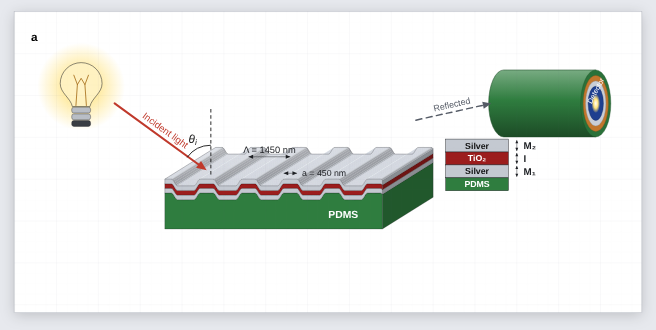
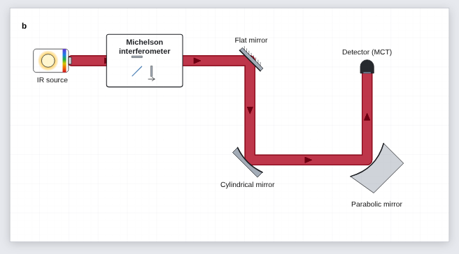
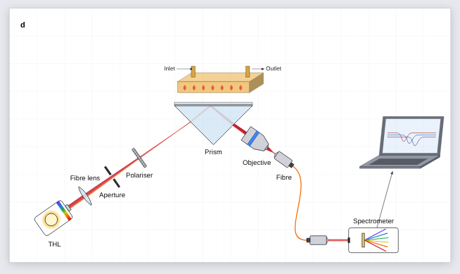
| Part | Where | Useful settings |
|---|---|---|
| 3D cylinder, 3D block | Structures | Coaxial face rings (e.g. an absorber-coated detector), slab substrates, chips. |
| Angle marker, dimension line | Annotations | θi arcs with a dashed normal; period or length lines (Λ, L…) with arrows or ticks. |
| Arrow with text | Graphical abstract | Fabrication steps (“Annealing 300 °C”), incident or reflected light. |
θ_i, θ_{obs}, TiO_2, x^{2+}, \lambda, *italic*, **bold**.Optomechanics and imaging parts
Mounts, tubes, cages, stages and imaging optics, drawn generically in the app's own style. They are real optics in the beam, not just pictures.
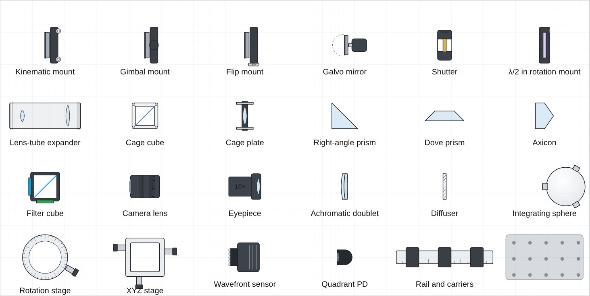
Mounts that steer
A kinematic mount's Fine tilt steers the beam by twice the angle; a galvo's scan angle can be keyframed; a flip mount flipped out lets the beam through.
Lens tubes and cages
A lens tube holds a lens, a filter or a beam expander (the beam leaves mag× wider, collimated). Cage cubes take a splitter, PBS, mirror or dichroic.
Epi-fluorescence
The filter cube sends excitation up to the objective and passes only the emission band down to the camera, so a microscope sketch traces correctly.
Prisms and the rest
Right-angle prisms turn the beam by total internal reflection; Dove, wedge and axicon shapes refract. Shutters block when closed; breadboards, rails and stages sit under the optics.
Ray diagrams, real lenses and microscope templates
Draw light as rays when the figure is about imaging. Switch a lens to Real glass surfaces and the rays are traced through its curved faces, so aberrations appear by themselves.
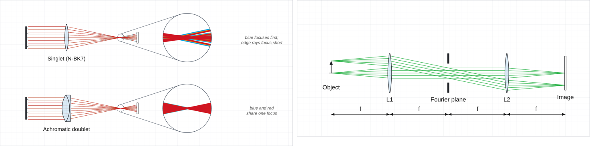
Ray bundle / object
An object arrow, a point source or a parallel bundle. One click picks F · d · C, RGB, one colour or black for print; the ray width slider sits beside them. Any laser can also be drawn as parallel rays (Draw as a ray bundle).
Real glass lenses
Spherical surfaces in N-BK7, flint, fused silica, CaF₂… designed for the focal length you set. Edge rays focus short; a singlet focuses blue about f/V before red; the doublet fixes it.
Focus and spot size
A lens shows its focal length (and, when real, its back focal distance). Move screen to focus puts the next screen or camera exactly there; the screen then reports the RMS ray spot per wavelength, Move to best focus finds the smallest spot, and Ray spot CSV downloads every ray's landing point.
Microscope templates
Epi-fluorescence, laser-scanning confocal with an animated galvo and a pinhole, light-sheet, 4f imaging with its Fourier plane, and the aberration demo above.
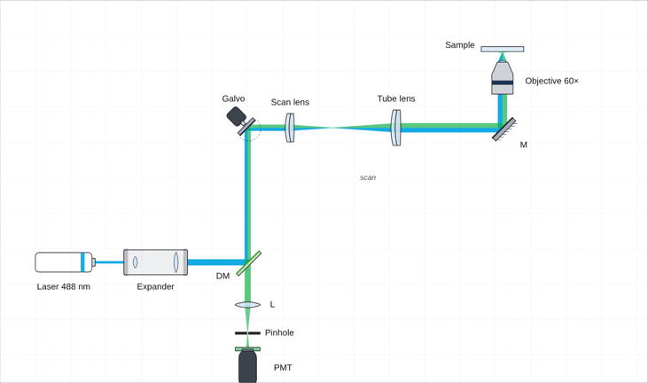
Calculated spectra: the sketch and its physics
Layer stacks and the SPR prism calculate their reflectance, transmittance and absorptance from measured optical constants. A linked data panel redraws the moment you change a layer.
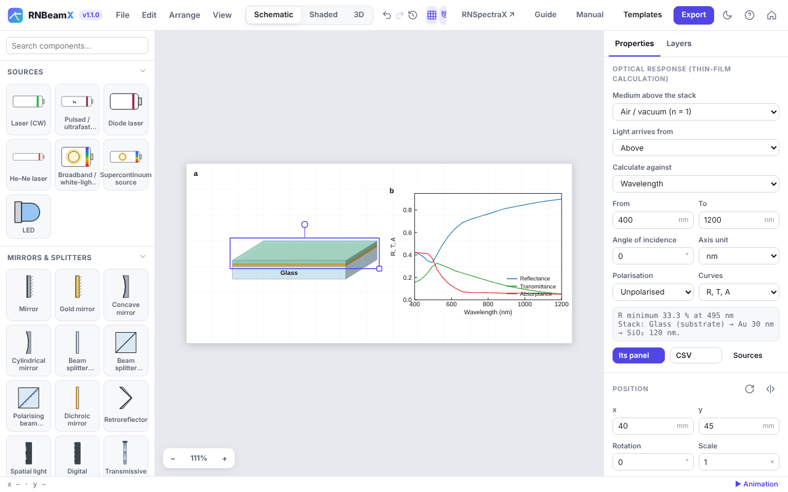
1 · Materials and thicknesses
Each layer's second line sets its material (Ag, Au, Al, TiO₂, SiO₂, Si, water, PDMS, glasses… or your own n, k) and its real thickness in nm. The drawn thickness only changes the picture.
2 · What to calculate
Under Optical response: against wavelength or angle, p, s or unpolarised light, and the curves (R, T, A). The readout gives the dip or peak position and width.
3 · Linked panel
Add data panel places a plot that follows the stack. Keyframe the analyte index or a thickness to animate a binding event. Unlink freezes the curves; CSV exports them.
SPR in the beam path
With a chip on the prism, the traced beam is reflected with the calculated amplitudes, so the spectrometer readout shows the same dip. See the SPR sensor template (panel d).
Gratings, rigorously (RCWA)
Build a grating from blocks (substrate, Grating ridges, coatings) and the calculation switches to RCWA: one period with the real period, ridge height and coating thicknesses, every diffraction order included, TM handled with Li's inverse rule. It runs in the background; Check convergence tells you when enough orders are used.
Figure styles
One setup, several looks. Switch at the top of the window or with 1 2 3.
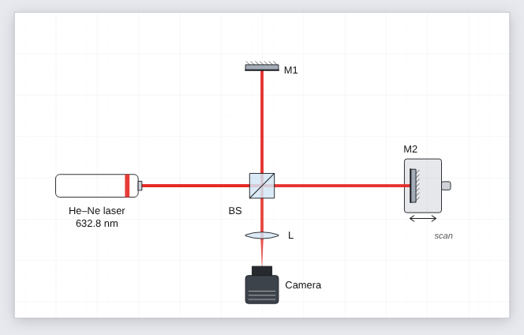
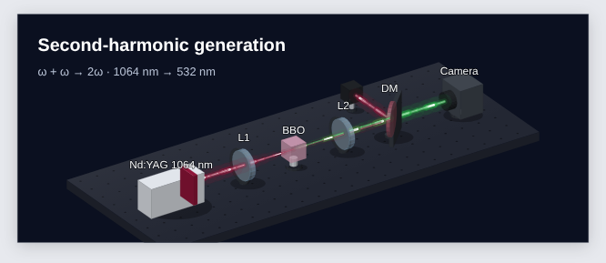
Multi-panel figures and data
Data panels
File ▸ Add data panel places a vector plot next to the setup. Import CSV or TXT, or paste columns.
From RNSpectraX
In RNSpectraX press Export ▾ → RNBeamX. The processed spectrum arrives here as panel b.
Labels
Labels place themselves away from parts and beams. Shift+L re-arranges all of them, in 2D and in 3D.
Animation
Open the timeline, set keyframes (I) on any property (a wave-plate angle, a piezo, a coating thickness), then export an MP4 or WebM video.
Groups, your library and layout helpers
Group (Ctrl+G)
Parts move, rotate and scale as one; optics inside keep working. Ctrl+Shift+G ungroups.
My components
Save a group to the library and reuse it in any figure. Export file shares it with your group; File ▸ Import component file adds theirs.
Tidy setup (Shift+T)
Puts optics exactly on their beams, evens out nearly even spacing and re-places labels, without changing the optics.
Fit to a journal width
Rescales the figure to 89, 120, 183 mm (or any width) with type and line weights unchanged, and the physics identical.
While dragging, green guides show equal spacing with the neighbours in a row or column.
Export, sharing and submission
Share link (File ▸ Copy share link): the whole figure in the address, nothing uploaded; a co-author opens it and edits a copy. PowerPoint: a slide with the figure as a vector picture; right-click ▸ Convert to Shape to edit it. TikZ: LaTeX drawing commands for theses and papers. PDF and SVG stay fully vector with real text; PNG and TIFF render at the dpi you choose. File ▸ Journal check lists what a figure editor will look at (font sizes, line weights, colour-blind safety, image resolution), and the Caption helper drafts a caption with every abbreviation defined.
Reset and undo
The ↺ Reset button next to undo and redo, also in File ▸ Reset everything and the touch toolbar, returns RNBeamX to its first state in one click: an empty default figure, default grid and snapping, and the timeline closed. The reset is a single undo step, so Ctrl+Z (or Undo in the notice that appears) brings your figure back.
Keyboard shortcuts
| Action | Keys | Action | Keys |
|---|---|---|---|
| Undo / redo | Ctrl+Z / Ctrl+Shift+Z | Rotate ±15° | R / Shift+R |
| Duplicate | Ctrl+D | Flip | F |
| Delete | Del | Orient to beam | O |
| Fit page | 0 | Styles | 1 2 3 |
| Grid / labels | G / L | Auto-arrange labels | Shift+L |
| Timeline / play | T / K | Keyframe | I |
| Save / export | Ctrl+S / Ctrl+E | Help | ? |
| Group / ungroup | Ctrl+G / Ctrl+Shift+G | Tidy setup | Shift+T |